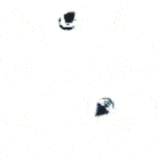
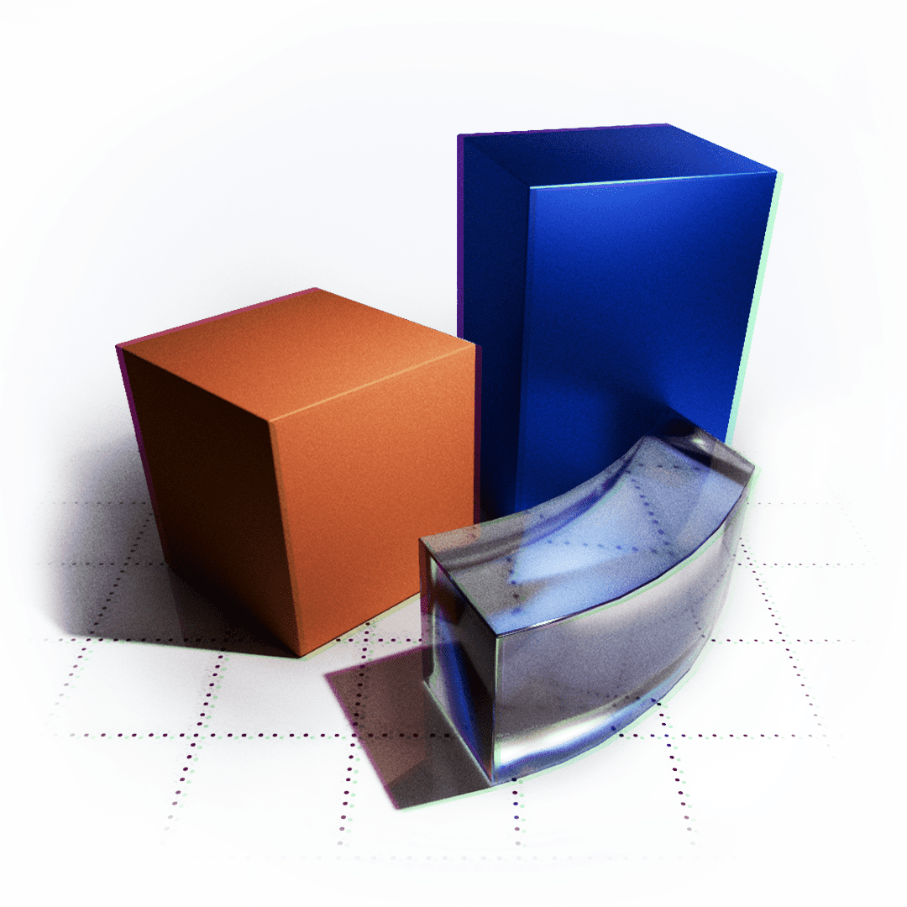

The list below includes fun side-projects exclusively which I haven’t been paid for or told to pursue by anyone but primarily did because… well, anyone needs a hobby. Note though that I threw out most projects that probably aren’t all that interesting to others and would only be a distraction here.
-

Field-Dependent THz Transport Nonlinearities in Semiconductor Nano Structures
Quentin Wach, Michael T. Quick, Sabrine Ayari, Alexander W. Achtstein
The charge transport in semiconductor quantum dots and nanorods is studied theoretically, predicting strong field-dependent nonlinear mobility effects and intra-pulse gain. We studied the temperature- and size-sensitive mobility spectra, crucial for applications like 6G tech and nano electronics in general.
PCCP -

THz Response of Charge Carriers in Nanoparticles
Michael T. Quick, Quentin Wach, Nina Owschimikow, Alexander W. Achtstein
Presenting a new quantum mechanical theory that models the THz mobility of charge carriers in low-dimensional semiconductors, revealing nonlinearities even at low field-strengths as well as a quantum mechanical equilibration current that counteracts the mobility at low frequencies.
Advanced Photonics Research -

Introduction to Computational Fluid Dynamics
Where we will discuss the Navier-Stokes equations and then break down the problem with the presence of solid objects implementing a simple real-time solver in Python.
star N/A -
Image Ranker: A Web App for Pairwise Image Ranking
Training generative image models requires a way to compare images and provide feedback on which images are better. I built a web app to do just that.
star N/A -

Simulating & Animating Science with Python
A free collection of tutorials and simulation examples that aim to showcase and explain the animation capabilites one has using Python. This includes chemical reaction diffusion, the viral spread in pandemics, fractals, chaotic pendulums with springs, Conway’s game of life, quantum states of hydrogen, galaxy collisions, and much more.
star N/A sticky_note_2 +100K views across the internet. -
TERRA: The Tiny Terrain Generator
This Python package provides various physics simulations for hydraulic erosion, tectonic dynamics, weather patterns, biomes, geological primitives, tesselations, filters, and more to quickly generate highly realistic terrains.
star N/A -

Augmenting Obsidian.md with AI
A simple Python script to quickly organize your markdown notes in Obsidian.md using OpenAI’s large language models. Any random, untagged, empty, or unlinked notes? No more. This little script will fill the gaps, connect what belongs together, and even create high level organizing nodes if a specific topic has a lot of notes. It also provides additional meta-information and visualizations.
star N/A -

IC3D: Render .gds Files in 3D
.gds to .gltf file conversion and workflow to create photo-real animations of your photonic/electronic integrated circuits. Compared to other scripts, this one takes into account complex nested cell structures, rotations, and flips as one typically encounters them in photonic integrated circuits.
star N/A